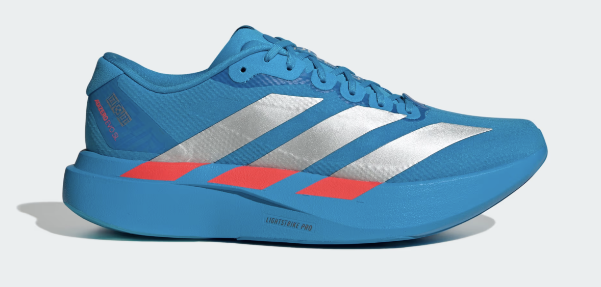
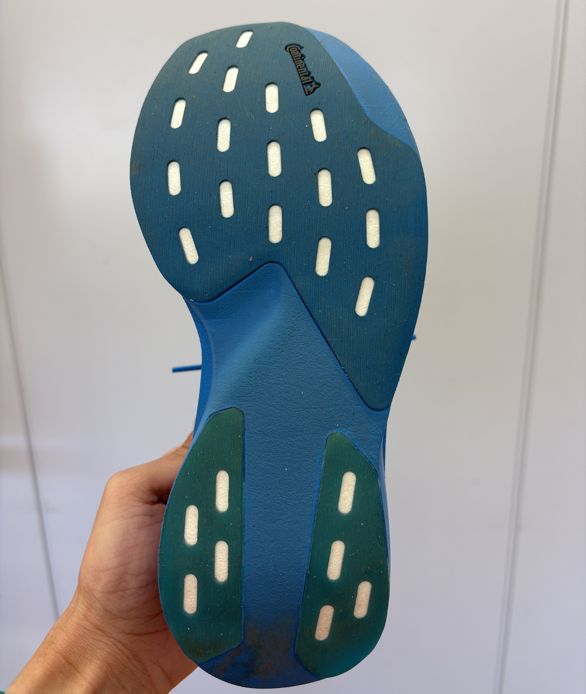
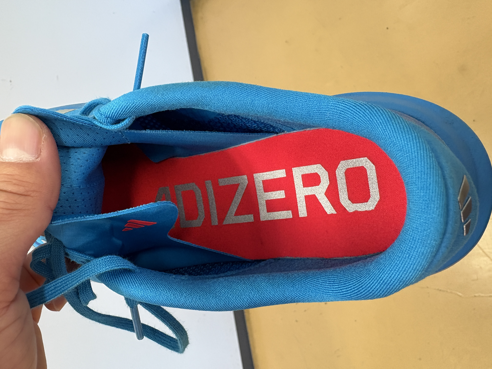
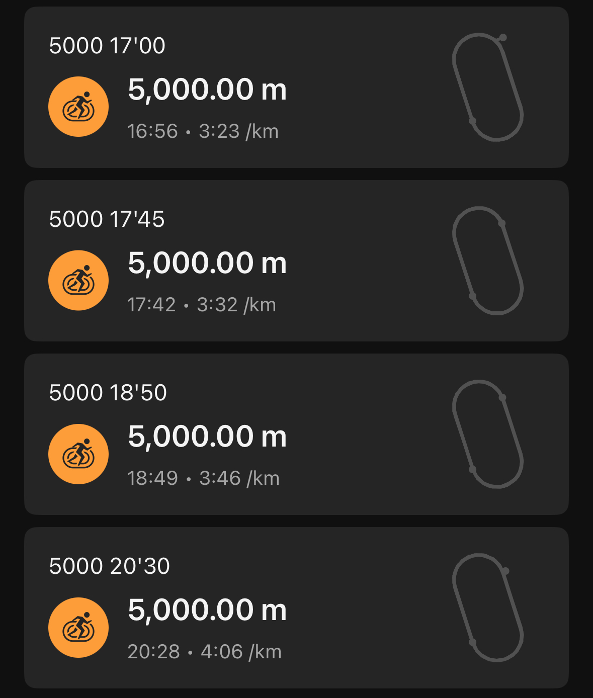
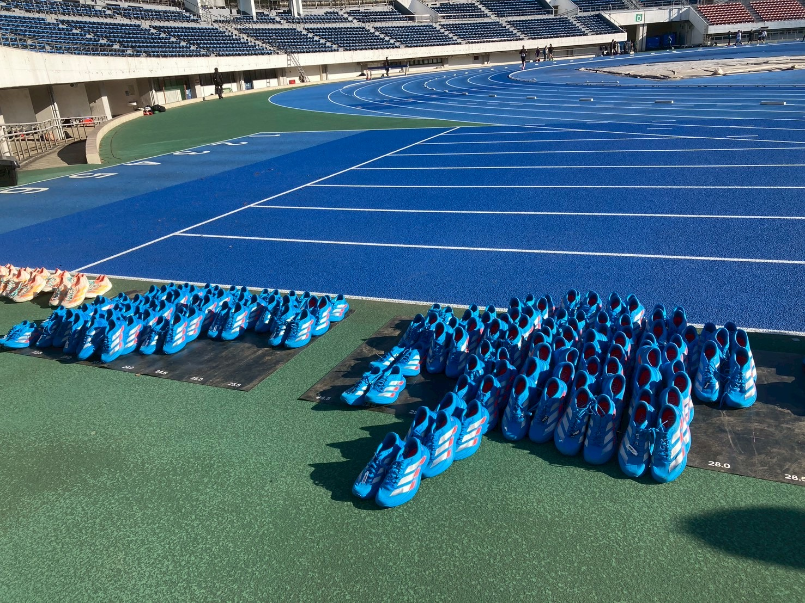

公式の引用
ADIOS PRO EVO 1から生まれた、アディゼロ内最軽量トレーニングシューズ
新開発のウーブンアッパー素材が、優れた伸縮性と快適なフィット感を提供。 必要な部分にはしっかりと補強を施し、足のブレを抑えて安定した走りをサポートします。
さらに、中足部にはナイロン製の「ドッグボーン」を搭載。 反発力を高め、より自然でスムーズな走行を実現します。 前足部の先端には高グリップの「コンチネンタルラバー」を搭載し スリップによるエネルーロスを軽減。
スペック
|
EVOSL WOVEN  |
|
|---|---|
| ミッドソールドロップ | 6.5 mm（ヒール：38.5 mm / 前足部：32 mm） |
| 重さ | 188g（24cm） |
| 価格 | 19800円 |
履いた感想
想像では反発もあって3'20くらいまでの速いペースで走れる、 プレートのない厚底シューズというイメージを持っていました。
履いてみると厚底のような反発はなく、どちらかというとジョグシューズのイメージです。 ただ3'20まで走れるというのは想像通りで、踏み込むと柔らかく、 反発は強くないものの3'20でも快適に走ることができました。
ゆっくり走ると沈み込みがないのでジョグでも履けますし、 スピードを出すと沈み込んだ分反発もあるので速いペースにも対応できます。 とはいえキロ3分ペースは快適には走れないので、 長めの距離走用に最適なシューズというイメージです。 (柔らかさがあるので長い距離でも疲れない)
サイズ感
普段私は24.5cmを履いていますが、今回はレディースの24cmを履きました。 エボSLは前作もそうでしたが若干大きめの印象があるため ハーフサイズ下げがちょうどいい気がします。
ただ今作はシュータンがシューズと一体型になったのでフィット感が増しています。 そのため人によっては横幅が窮屈に感じそうです。
今回はMKディスタンス記録会のadidasトライオンで履きました。 5000×4を20'30〜17'00ペースでしたが問題なく走れました。
 おすすめする人
- フルマラソン3時間切りのレース
- ジョグでキロ4分を切る人
- 3’20~30くらいのペース走を頻繁にやる人
あくまで私の走力だと上記に当たる人にはおすすめです。 ただ私はジョグはキロ５くらいですし、 ペース走は3’20くらいなのであまり用途はないかなと感じました。 持っていたらふらっと3’30~40くらいのペース走は 頻繁にやるようになりそうですが。
反発感等も含め、かなり絶賛されているシューズですが、 そこまで言うほどではないかなと思います。